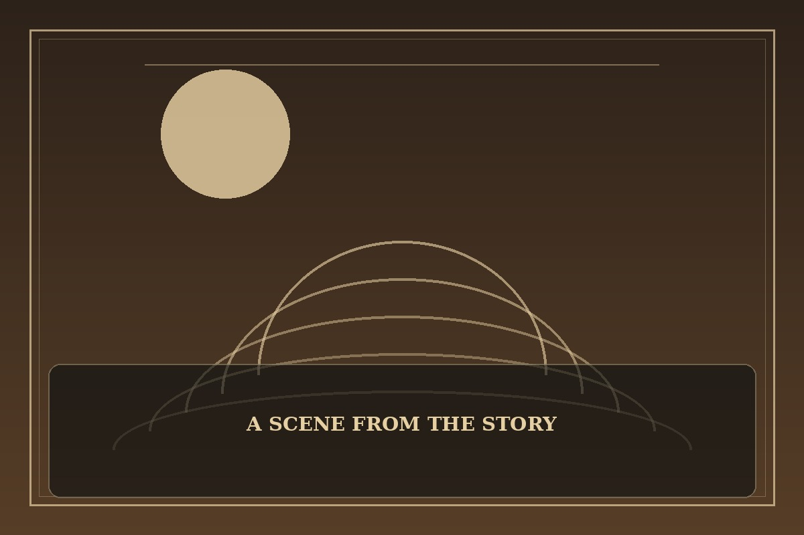

Jungle Juice
Synopsis
A student with a hidden insect-like ability enters a secret community where unusual powers are both a gift and a danger. Learning control means accepting the parts of oneself that once inspired shame.
Chapter 1: Wings Under the Uniform
The first time his wings unfolded, Minseo was standing in a crowded hallway. A gust of air scattered papers across the floor, and every conversation stopped as the translucent wings caught the fluorescent light.
A student guide hurried him through a concealed door into a training room filled with people whose abilities were just as strange. Some joked to ease his fear; others warned him that the outside world would not be kind. Minseo kept his arms folded, trying to hide the wings that would not disappear.
During the first exercise, he stopped fighting the movement and learned to balance with it. He rose only a few inches, but the room cheered as if he had crossed a continent. For the first time, his difference felt less like a secret to conceal and more like a skill he could learn to use responsibly.

This fan-made sample is an original piece created for a student website project; it is not an official chapter of Jungle Juice.